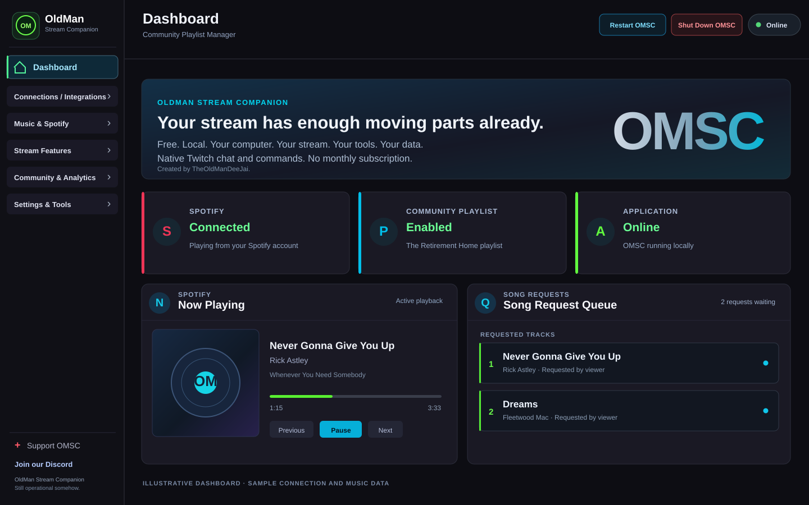

Spotify & Song Requests
Control playback, manage requests and display what's playing with customisable on-stream widgets.
Free. Local. Your computer. Your stream. Your tools. Your data.
Native Twitch chat and commands. No monthly subscription.

Illustrative dashboard layout · Not a current application screenshot · View larger
Pick the tools that suit your stream. OMSC brings them together in one place.
Control playback, manage requests and display what's playing with customisable on-stream widgets.
Build your own sound and video alerts, customise playback and manage viewer-triggered moments.
Keep Twitch chat close with a movable, click-through overlay for borderless fullscreen games.
Let your community contribute music while retaining moderation tools, history and contributor credits.
Recognise the people behind your stream with flexible layouts and animated on-stream credits.
Opt in to discover other OMSC streamers and see who's live in the community.
Personalise banners and media for visiting streamers and incoming raids, with configurable layouts and playback.
Schedule chat messages with configurable intervals and activity requirements. The module starts disabled.
Review locally recorded stream sessions and historical activity. Optional Discord sharing is configured separately.
Export supported settings and data, then restore with archive checks and recovery safeguards.
Connect your Twitch broadcaster directly to OMSC, optionally use a separate Twitch bot, and receive chat in the Desktop Chat Overlay. Native chat and commands are implemented in v0.4.50 development builds without a Streamer.bot dependency. Other event-driven features are being tested ahead of public release.
Explore chat commandsOMSC saves stream session history locally for Stream Analytics, and records supporter activity and events locally for your Stream Credits display.
In development for v0.4.50: native Twitch follow, subscription, gifted-subscription and Bits events with independent banner, video, image and audio options. These are not yet part of a public download. See also the chat command reference.
Try working widget demonstrations with sample data. These aren't screenshots of the configuration pages.
Explore just a few of OMSC’s music widget layouts in action: Equaliser Tower, Vinyl Player, Spectrum Ring and Classic. The previews use demonstration track information, not a live Spotify connection.
Use your own audio and video files or search and download video clips directly from the Creati online library. OMSC stores your media locally, giving you complete control over your custom stream alerts. Create Twitch Channel Point redeems so viewers can trigger your alerts, and customise playback, appearance and presentation, including optional chroma keying. Try the sample sound or watch a real video alert in action.
Watch OMSC's actual Perspective Crawl, Spotlight, Retro Arcade, Terminal and Classic Roll layouts. In your installed app, Stream Credits uses locally recorded stream activity and supporters. This website preview uses sample names.
Website demonstrations use sample data, not a live OMSC connection. Music code matches the application; the other previews are being checked against current development builds. Alert media is illustrative.
Connect with other streamers, share ideas, get support and help shape the future of OMSC.
Guidance for getting started, connecting Twitch and OBS, configuring modules and understanding what is still in development.
These answers cover the pre-release product; tester features may change.
Ask for help on DiscordYes. OMSC is being developed as a free, locally run streaming companion without a monthly subscription. There is no public Windows installer available yet.
The public installer is still being prepared. Some development and beta builds have been shared with testers, but they are not public releases. Check the website or Discord for official updates.
OMSC is a Windows desktop application. A public macOS or Linux version has not been announced. Its management interface opens locally in a browser, but OMSC itself runs on Windows.
Twitch is needed for Twitch interactions; OBS Studio is used for on-stream browser sources and OBS integration. Spotify is optional and needed only for Spotify functionality. Choose the modules that suit your setup.
v0.4.50 is replacing Streamer.bot dependencies with native Twitch chat, commands and event handling. Earlier tester builds may still depend on it for some actions. This native-only migration is still being tested and is not yet publicly released.
Open Connections in OMSC and follow the Twitch authorisation process for your broadcaster. You may also connect a separate Twitch account for chat messages. It is optional: supported messages can use the broadcaster account when no separate account is connected.
Start OMSC and copy the Browser Source URL displayed in the widget's settings. Add a Browser Source to your OBS scene and paste the URL. OMSC needs to stay running because the widget is served locally.
Confirm OMSC is running, the module is enabled, and the OBS Browser Source has the current URL. Refresh the source. For features that control OBS directly, also check the OBS WebSocket connection and scene/source settings.
Desktop Chat supports borderless fullscreen games using a movable, click-through overlay. Exclusive fullscreen is not supported. Switch your game to Borderless Fullscreen.
Spotify Premium is required for Spotify playback and related music-control features. You can use modules that do not depend on Spotify without connecting Spotify.
Yes, when Song Requests are enabled and configured. Depending on the streamer's setup, requests can use supported chat commands or Twitch Channel Points. The streamer controls queue behaviour and availability.
Yes. OMSC provides configurable command names, prefixes, permissions and per-command enablement. The Commands page shows the default names; the working commands in a channel can differ.
Custom Alerts play your selected media, including supported Channel Point triggers. Native Twitch Events react to follows, subscriptions, gifted subs and Bits. The expanded native events editor is in v0.4.50 development, not a public release.
Yes. The application provides configurable shoutout and raid banners with profile, text, layout and media controls. Some advanced design and media options are still being refined in development builds.
Stream Credits uses locally recorded participation and supporter events for end-of-stream displays. Stream Analytics keeps local records of stream sessions. The available detail depends on the modules enabled and activity recorded.
OMSC stores its settings and many stream records locally. Optional online integrations with Twitch, Spotify, Discord and the Streamer Directory exchange data needed to provide their services. Running locally does not mean those integrations are offline.
OMSC includes Backup & Restore for supported settings and data, with archive validation and recovery safeguards. Make a backup before major changes, and check restored account connections afterwards.
No. The Streamer Directory is opt-in and off by default. You choose whether to participate in discovery by other OMSC streamers.
Not in v0.4.50. Native commands and events are separate from the proposed modular OMSC Bot. Full moderation, loyalty and games functionality belongs to a later roadmap discussion, not the upcoming release.
Join the OMSC Discord. Include your build version, steps to reproduce and a screenshot where helpful. Never share Twitch or Spotify access tokens or passwords.
We're preparing the public Windows release of OldMan Stream Companion. The app will be free to use, run locally on your computer, and have no monthly subscription.
No public installer is available yet. We'll enable downloads here when it's ready.